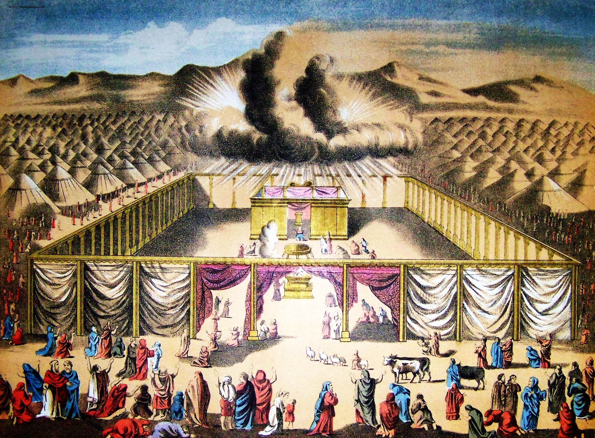

{kind=link}
Documented total
--
Only rows that have both a quoted amount and a current price.
Current Price Calculator
The tabernacle was not only a sacred place of worship, but also a major communal building project requiring costly and carefully prepared materials. The detailed lists of gold, silver, bronze, fabrics, wood, oil, and precious stones show both the value of what was offered and the importance of the tabernacle within Israel’s life. By looking at its material cost, we gain a clearer sense of the scale of the project and of the devotion expressed through the people’s contributions.

Documented total
--
Only rows that have both a quoted amount and a current price.
Quantified rows
--
Metals, stones, and the exact anointing-oil recipe ingredients from Exodus 30.
Open rows
--
Materials still missing enough data for a full total even after cross-referencing Exodus.
Material Table
| Material | Amount in passage | Current unit price | Row total | Pricing basis |
|---|
Project info
© 2026 Tony Jurg. Licensed under CC BY 4.0: free to reuse with reference to the author.